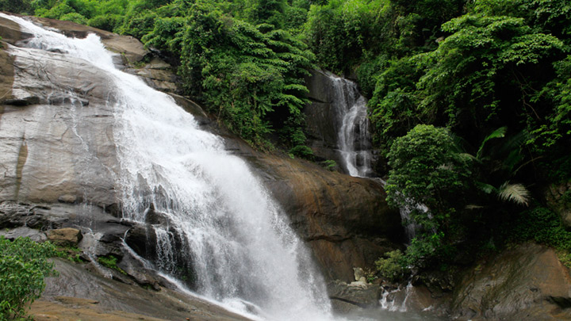

Kozhikode Beach

Kozhikode will always have a special place in the history of Kerala as it is here that Vasco-da-Gama first landed and the legendarySpice Route came into existence. This region still has a historic charm to it. Kozhikode Beach is the personification of the numerous characteristics that make Kozhikode so unique. People flock in large numbers to view the sunset from the beach. One gets a fresh supply of seafood in the shacks that surround the place. Kallumekaya (mussels) is a local favourite. A walk to Dolphins Point at dawn ensures a meeting with playful dolphins. You are also greeted by a majestic lighthouse and two piers opening into the sea. Both have been here for over a hundred years.
Thusharagiri Waterfalls
Caressed in the folds of the Western Ghats is the picturesque Thusharagiri Waterfalls. Lying 50 km from Kozhikode, the Thusharagiri Waterfalls comprises Erattumukku, Mazhavil Chattom, and Thumbithullum Para which can be reached through trekking. Thusharagiri or 'mist-capped peaks' gets its name from the beautiful silvery crown formed at the mountain top due to the waterfalls. Nature here will transport to a different dimension where time itself comes to a standstill. Having a dip in the cool water here is highly recommended as well, to revive one’s body and mind. The atmosphere on the way to waterfalls is filled with the aroma of various plantations that are on every traveller’s wish list like arecanut, pepper, ginger and spices. Mist-capped peaks, ebullient streams, boisterous waterfalls, dramatic backdrops of lush woods and plantations make it is a wonderful destination to enjoy nature at its finest.
Kakkayam Dam

Kakkayam is a stunning dam site in Kozhikode that is famous for its trekking trails and boating options. This lesser-known spot gives one the opportunity to explore some exquisite trails that are sprinkled around the area. Boating rides here give one an exclusive view of the dam area along with a bunch of small waterfalls and dense forests. It is the perfect place to have a quiet secluded picnic with your loved ones.There are some waterfalls hidden inside the forest that are hardly accessible by roads. They need to be approached through the wild streams or rivers that meander through the woods that shroud them, if someone wants to enjoy their untamed splendor. The Ambalappara waterfall near Kakkayam in the district is one such. The falls will unfurl only before those who are game for a boat ride in the Kakkayam dam reservoir, which was opened recently for tourists under a hydel tourism project under the Kerala Hydel Tourism Centre (KHTC), a subsidiary of the Kerala State Electricity Board (KSEB). The wild falls, the lush greenery and the unexplored facets of the dense forest will unfold before those who are in the boat during the trip. Those lucky visitors will also be able to view herds of elephants and bison grazing in the catchment area.
Mananchira Square

The Mananchira Square, located in the heart of Kozhikode city, is constructed around the Mananchira tank. This huge artificial pond built by the Zamorin King, Mana Vikrama, is fed by a natural spring. The area around the tank has been converted into a park, landscaped with trees, plants and lawns. Elements here like the arch at the entrance, guarded by Tipu Sultan's cannons, and the ancient buildings around the Mananchira Square help maintain the old-world charm. The highlights of the park include an artificial hill, sculptures, an open-air theatre and a musical fountain. The public library constructed in the traditional style inside the premises merges well with the ambience of the place. A bust of renowned Malayalam writer and Jnanpith awardee, S. K. Pottekkatt, is placed on a traffic island close by.
S M Street

S.M. Street, abbreviation for Sweetmeat Street, also known as Mittai Theruvu, is a shopping street located in Kozhikode. The street is a pedestrian zone. It also has a 160 year old Fire temple amidst shopping places.The history of SM Street dates back to time of the Zamorin when the ruler invited Gujarati sweetmeat makers to set up shop in the city and accommodated their shops just outside the palace walls.SM Street derives its name from the time it was lined with sweetmeat and halvah stalls. It is reputedly the busiest street in Kozhikode.From sweets to spices, clothes to electronics, or hand looms to textiles the shops at SM street offers everything which caters to your needs. Local handicrafts namely carvings made out of rosewood and buffalo horns, coir products such as floor mats, doormats, brushes, mattresses, and the snake boat toys, are the most popular ones.